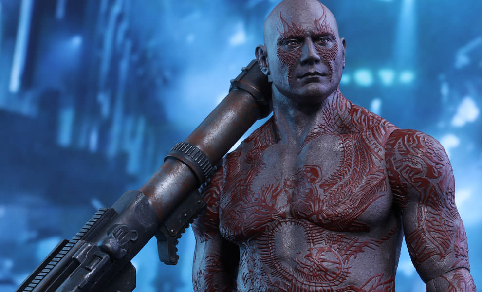

Drax adalah salah satu karakter di dunia Marvel. Tokoh Drax diciptakan oleh Mike Friedrich dan Jim Starlin. Drax merupakan anggota dari kelompok Guardians of the Galaxy, Namun tokoh ini muncul pertama kali pada komik "Iron Man #55" yang diterbitkan pada Februari 1973. .
Drax sendiri adalah manusia yang terjebak dan tinggal di luar angkasa. Nama asli Drax adalah Arthur Sampson Douglas. Ketika dirinya bersama anak dan istri sedang mengendarai mobil, tiba-tiba kendaraan mereka diserang kapal luar angkasa yang ternyata dikendalikan oleh Ronan dan Thanos. Thanos menyerang Drax karena ia bisa melihat pesawatnya. Dalam Komiknya, Istri Drax tewas dan anak perempuannya diculik oleh ayah Thanos yang juga berada di kapal tersebut.
Drax sendiri adalah manusia yang terjebak dan tinggal di luar angkasa. Nama asli Drax adalah Arthur Sampson Douglas. Ketika dirinya bersama anak dan istri sedang mengendarai mobil, tiba-tiba kendaraan mereka diserang kapal luar angkasa yang ternyata dikendalikan oleh Ronan dan Thanos. Thanos menyerang Drax karena ia bisa melihat pesawatnya. Dalam Komiknya, Istri Drax tewas dan anak perempuannya diculik oleh ayah Thanos yang juga berada di kapal tersebut. .
Dalam film "Guardians of the Galaxy" versi James Gunn, Drax sudah kehilangan anak dan istrinya dan berada di penjara luar angkasa. Misi untuk memburu Thanos dan Ronan pun masih dilakukannya. Hingga pada akhirnya ia bertemu Gamora mengungkapkan kekesalannya pada anak perempuan Thanos tersebut. Beruntung Star Lord dapat menghindarinya dan mengajak Drax bergabung dengan kelompok Guardians of the Galaxy..
Meskipun manusia, Drax memiliki kekuatan super. Ia mampu hidup di luar angkasa tanpa ari, makan dan udara. Drax juga ahli bela diri yang baik. Perawakannya yang kekar dan nafsu besar untuk membunuh Thanos dan Ronan membuat di gelap mata dan tak sungkan membunuh orang yang menghalanginya. Karena itu banya orang menjulukinya the Destoryer (sang penghancur). Selain itu, Drax juga pandai menggunakan kan belati, dan benda tajam lainnya.